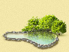
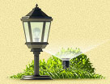
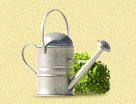

Ландшафтное проектирование Ландшафтное проектирование |
 Озеленение Озеленение |
Водоемы | Малые архитектурные формы | Стилевые сады |
 Посадка крупномеров Посадка крупномеров |
 Зимние сады Зимние сады |
 Вертикальное озеленение Вертикальное озеленение |
Инженерные системы | Обслуживание садов |
Водоемы
Наличие на участке водоема всегда очень много значит для его хозяина: созерцание воды, как известно, благоприятно влияет на установление душевного равновесия и гармонии. Важно правильно подобрать водоем — от этого зависит не только гармония души, но и красота самого дачного участка, что немаловажно.
Для того, чтобы создать на участке небольшой оазис, используются самые разнообразные материалы, которые позволяют не только образовать не только резервуар для воды, но и развести в ней растения и населить различными водными обитателями. Изоляционные покрытия и формы, которые используются при создании водоемов, не являются токсичными и позволяют эксплуатировать себя течение длительного периода времени.
Объемы емкостей различны. Различны и материалы, из которых эти емкости изготавливаются. Для создания небольших водоемов до девятисот литров обычно используется полиэтилен. Формы, объем которых составляет 600-900 литров, обычно продолговаты. Такие формы легко устанавливать, просто чистить, они не боятся назких температур и ультрафиолетовых лучей. Могут служить более 10 лет. Однако такие пруды имеют один небольшой недостаток: стенки неравномерны по своей толщине.
Полиэтиленовые пруды выпускаются сейчас в различных странах. Отечественны модели также имеют место на рынке, но изготовлены они по зарубежным аналогам. Но цены на российские емкости намного ниже, а качество, наоборот, превосходит зарубежные образцы. Доступные для покупателя и простые в установке, полиэтиленовые пруды, произведенные в России, перенесли уже несколько зим.
Пруды из стеклопластика могут позолить большее поле для экспериментов. Объем воды, который они способны вместить, составляет 350-1200 литров. Форма из этого материала имеет ряд улучшенных характеристик, что, несомненно, повышает ее популярность по сравнению с полиэтиленовыми емкостями. Она более устойчива к перепадам температур и воздействию ультрафиолета. Срок службы таких емкостей составляет в среднем 30 лет. Возможно изготовление цветных вариантов емкостей Существуют стеклопластиковые модели и большего размера (до 4000 литров), однако они нередко не выдерживают воздействие низких температур и по корпусу начинаю проходить трещины. Это является следствием неправильной установки формы: большой размер не позволяет соблюсти технологию и полностью заполнить песком полости между емкостью и стенками котлована. При установке меньших форм таких проблем, как правило, не возникает. Для строительства больших водоёмов (5-6 кв.м. и более) желательно использовать гибкие изоляционные материалы.
{kind=link}
{kind=link}
{kind=link}
{kind=link}
{kind=link}
{kind=link}
{kind=link}
{kind=link}
Большой популярностью сейчас пользуется и пленка из ПВХ. С ее помощью можно создать на участке водоем любой, даже самой причудливой формы.
Плёнка из ПВХ позволяет установить на участке водоём любой формы и размера. В зависимости от параметров будущего пруда подбирается материал оптимальной толщины. Для устройства небольших водоемов (площадью не более 15 кв.м. и глубиной до 70 см.) применяется пленка толщиной 0,5 мм. Для водоемов больших размеров с глубиной до 1,5 м. рекомендуется пленка толщиной 1 мм. ПВХ тоже весьма устойчив к УФ-лучам и низким температурам. А еще он очень прост в установке и ремонте в случае необходимости — для ремонта пленки или отдельных ее кусков используются специальные клеи. Водоем из ПВХ проживет на участке не менее 10 лет.
Ещё один материал для устройства водоёмов на загородном участке — бутилкаучуковая резина (EPDM мембрана). Она прочнее, чем пленка ПВХ и более надежна. Водоемы из этого материала можно устанавливать в любое время года, т.к. резина растягивается и сложностей в установке не возникает. Этот материал идеально подходит для создания сложных прудов большой глубины или на каменистых участках. Срок службы такого водоёма в зависимости от условий эксплуатации составит 10-30 лет. Ремонтировать этот материал также просто, как и пленку ПВХ — с помощью клеев и специализированных лент.